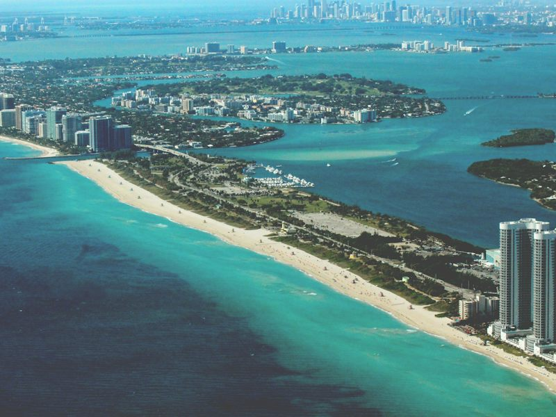
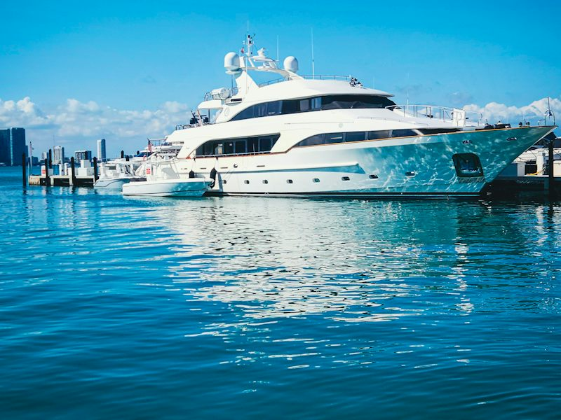
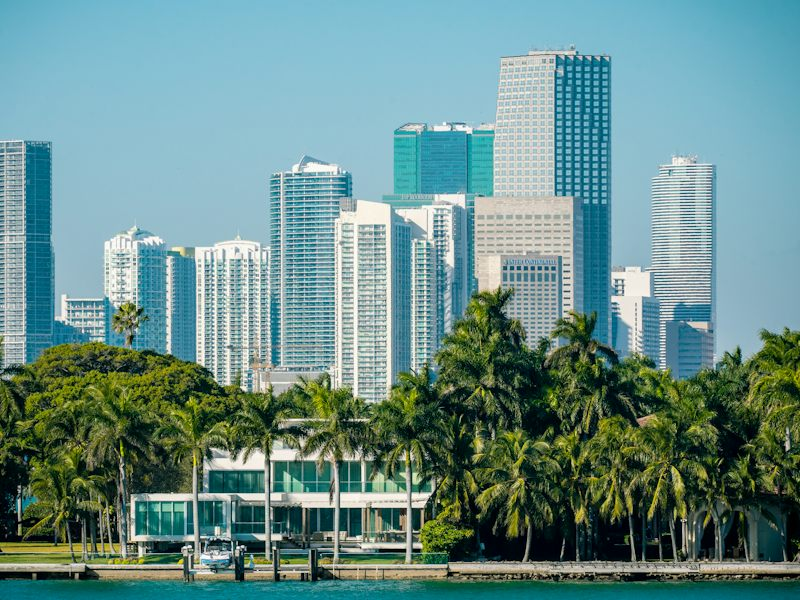
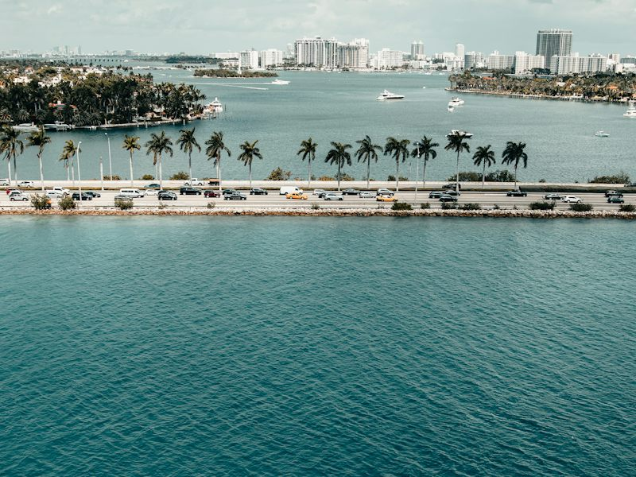

Miami Vice City by Boat
Our Millionaire's Row cruise shows Miami the way the trailers frame it, from the water. A licensed captain and host loop out of Bayside Marina past PortMiami, Fisher Island and the Miami Beach Marina megayachts, then the celebrity mansions of Star, Palm and Hibiscus Islands and the Venetian Islands, before cutting the engines for the skyline at golden hour.

At a glance
- Duration
- 2 hours
- Group
- Up to 12
- Departs
- 11a · 4p · sunset
- Pickup
- Confirmed after booking
Our Millionaire’s Row cruise. Loop out of Bayside past PortMiami, Fisher Island and the Miami Beach Marina megayachts, then the celebrity mansions of Star, Palm and Hibiscus Islands and the Venetian Islands, before a golden-hour hold on the skyline.
What's included
- Licensed captain and host
- Star Island & Millionaire’s Row mansions
- Skyline hold at golden hour
- Soft drinks and water
- Crew Souvenir Map + bandana
Best for
- Sunset lovers
- Groups of friends
- Pairs well with the city tour
Itinerary
- +0:00
1. Bayside Marina
Inspired · the downtown waterfrontBoard under the downtown towers, with the arena and the waterfront right behind you.
 +0:10
+0:102. PortMiami
Inspired · the port scenesCruise past the giant cruise ships and cargo cranes of the world’s busiest cruise port.

+0:253. Fisher Island
Inspired · the private islandThe island with no road: reachable only by boat or ferry, and home to some of the most expensive real estate in the US.

+0:354. Miami Beach Marina
Inspired · the megayachtsSuperyachts lined up at the south end of Miami Beach, near South Pointe.

+0:505. Star Island
Inspired · Millionaire’s RowThe heart of Millionaire’s Row: celebrity mansions with private docks, one after another.

+1:056. Palm & Hibiscus Islands
Inspired · the island estatesPalm-lined estates along the MacArthur Causeway, including the island where Al Capone once owned a waterfront house.
 +1:20
+1:207. Venetian Islands
Inspired · the causeway bridgesWeave between the islands and under the old drawbridge causeway.
 +1:40
+1:408. Downtown & Brickell skyline
Inspired · the skyline shotEngines off mid-bay for the golden-hour skyline shot, then back to Bayside.
Questions about this tour
Where does the Miami boat tour leave from?
Bayside Marina in Downtown Miami, with departures at 11am, 4pm and sunset.
Which mansions and islands do we see?
Star Island and the rest of Millionaire's Row, Palm and Hibiscus Islands, Fisher Island and the Venetian Islands, plus the megayachts at Miami Beach Marina.
Is the sunset departure worth it?
Yes. The tour ends with a golden-hour hold on the skyline, the shot fans know best.
Is this an official game tour?
No. Leonida Tours is an independent South Florida tour company running unofficial tours. We take you IRL to the real places that inspired the game's world. We are not affiliated with, endorsed or sponsored by any game publisher.
What does reserving mean?
It's free and there's no payment today. We confirm your date with you personally before public booking opens, plus 20% off your first tour.
How does the City Pass work?
One pass covers the Miami Vice City small-group tour, the boat tour and the Grasslands airboat. Book each date whenever you like during your stay.
Reserve now. Ride first.
Tell us your date and group size and we'll confirm your spot before public booking opens, plus 20% off your first tour.
Reserve Miami Vice City by Boat